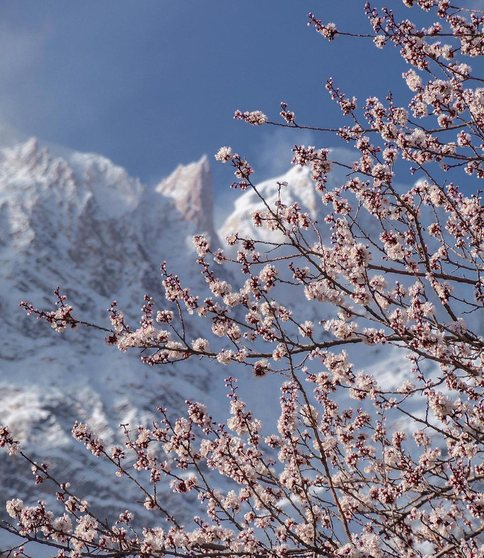
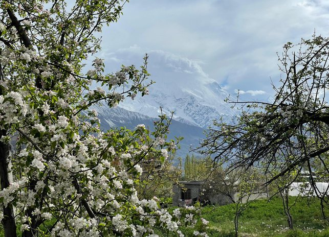

Travel Pakistan
Extraordinary Pakistan experiences, from mountains
Where to?

Next group departure Spring Blossom Tour · 2 April 2027 10 days · Hunza & Skardu · 4–8 guests Scroll to exploreHunza Valley, Gilgit-Baltistan
- 4.9/5 traveller rating
- 10+ years guiding in Pakistan
- TourRadar Silver Badge
- Born in Hunza, rooted in the Karakoram
Small-group departures · 2027
Fixed dates, small groups, local hosts
Join a planned departure with 4 to 8 travellers. We fix the dates for the best season, handle every flight and transfer, and take you to the villages we grew up in.
Find your journey
Three ways to see Pakistan
Why Pakistan
Three of the world's great mountain ranges meet here. The Indus Valley built some of the first planned cities here. And on a Lahore food street, it is still busy at midnight.


Explore the map
Pick a place, any place
Tap a pin to see where it is, when to go and which of our tours takes you there. Use the arrows to travel from the mountains to the sea.
Illustrative map, not to scale.
The vertical country
From the Arabian Sea to 8,611 metres
Travel north from Karachi and the land keeps climbing: through the plains of Punjab, over the Babusar Pass and into the Karakoram, where the road ends and the glaciers begin.


Above the dashed line: the 8,000-metre club. K2, Nanga Parbat, Broad Peak, Gasherbrum I and Gasherbrum II are all in Pakistan.
Explore treksGilgit-Baltistan in winter
Turquoise rivers, white valleys and almost no one else.
Where three ranges meet
The Hindu Kush, Karakoram and Himalaya meet here
Near Gilgit, three of the world's great mountain ranges come together at a single junction. Each one raises a giant inside Pakistan. The bars compare each summit with K2.

Hindu Kush
Tirich Mir 7,708 m
The highest peak of the Hindu Kush, rising above Chitral and the Kalash valleys.

Karakoram
K2 8,611 m
The second-highest mountain on Earth, at the head of the Baltoro Glacier.

Himalaya
Nanga Parbat 8,126 m
The western anchor of the Himalaya, seen from Fairy Meadows.
More than mountains
Four landscapes in one country


Tours & treks
Our most-loved journeys
Every tour can be run privately on your own dates. Tap the heart to save the ones you like and compare them later.
Don't see what you want? We build private, tailor-made trips around your dates, pace and budget.
Customise your tourCulture & heritage
Nine thousand years in one country
From one of South Asia's first farming villages to the Mughal monuments of Lahore. All six UNESCO World Heritage Sites are on this line.
 c. 7000 BCEMehrgarhOne of South Asia's earliest farming villages, in Balochistan.
c. 7000 BCEMehrgarhOne of South Asia's earliest farming villages, in Balochistan. c. 2500 BCE · UNESCOMohenjo-daroA planned Indus Valley city with grid streets, wells and covered drains.
c. 2500 BCE · UNESCOMohenjo-daroA planned Indus Valley city with grid streets, wells and covered drains. 1st – 5th c. CE · UNESCOTaxila & Takht-i-BahiBuddhist monasteries and stone sculpture from the age of Gandhara. Two separate UNESCO sites.
1st – 5th c. CE · UNESCOTaxila & Takht-i-BahiBuddhist monasteries and stone sculpture from the age of Gandhara. Two separate UNESCO sites. 14th – 18th c. · UNESCOMakli, ThattaOne of the largest necropolises in the world, on a ridge in Sindh.
14th – 18th c. · UNESCOMakli, ThattaOne of the largest necropolises in the world, on a ridge in Sindh.- 1541 · UNESCORohtas FortSher Shah Suri's fortress on the Grand Trunk Road, its walls running for about 4 km.
 16th – 17th c. · UNESCOLahore Fort & ShalimarThe Mughal citadel and Shah Jahan's terraced gardens, listed together.
16th – 17th c. · UNESCOLahore Fort & ShalimarThe Mughal citadel and Shah Jahan's terraced gardens, listed together. 1673Badshahi MosqueCompleted under Aurangzeb, facing Lahore Fort across the Hazuri Bagh.
1673Badshahi MosqueCompleted under Aurangzeb, facing Lahore Fort across the Hazuri Bagh.
Living culture
Shrines, bazaars, music and food
Pakistan's history is not only in its ruins. You hear it in the qawwali at a Sufi shrine and taste it on a Lahore food street.


When to go
Two seasons, two Pakistans
The mountains open up in summer. The plains and cities are at their best in winter. Pick a month to see what it's good for.
Best
Good
Off-season
 AprilApricot and cherry blossom across the Hunza valley.
AprilApricot and cherry blossom across the Hunza valley. Mid-MayChilam Joshi, the Kalash spring festival of song and dance.
Mid-MayChilam Joshi, the Kalash spring festival of song and dance. JulyThe Shandur Polo Festival, played on a mountain pass at about 3,700 m.
JulyThe Shandur Polo Festival, played on a mountain pass at about 3,700 m.Late OctoberAutumn gold in the poplar groves of Hunza and Skardu.

“Northern Pakistan is our home, and we want to share it through the warmth of our people and the stories of our villages.”
Why travel with Exploria
Not a booking site. A local team.
Exploria was born in Hunza. Our guides, drivers and planners live in the valleys you'll travel through, so you meet people, not just places.
10+Years in PakistanTours, treks and expeditions across every province.
4.9/5Traveller ratingAnd a TourRadar Silver Badge for service.
4–8Guests per groupSmall groups, so village homes and family kitchens still open their doors.
24/7On-ground supportIf a mountain flight is cancelled, we arrange the road transfer at no extra cost.
From our travellers
In their words
Reviews on Google and TourRadar
“I recently went on an unforgettable 10-day tour through Skardu and Hunza with Exploria, and I cannot recommend their services highly enough.”
“I feel this tour was a great way to start to get to know the ‘real’ Pakistan.”
“Don’t be scared to come over, the region is safe and you’re in very good hands with Exploria.”
Good to know
Questions travellers ask us
Still wondering? Message a trip planner on WhatsApp. A real person from our team will reply.
Ask on WhatsAppIs Pakistan safe to travel?
The northern valleys of Gilgit-Baltistan, and cities like Lahore and Islamabad, welcome thousands of international visitors every year. Our local team travels the same routes all season, watches weather and road conditions daily and is with you on the ground from arrival to departure.
Can solo and solo female travellers join?
Yes. Solo travellers, including solo women, are welcome on our group departures and private tours. A single supplement applies if you want your own room. Talk to us before booking if you'd like to discuss anything.
How big are your groups?
Our fixed-date departures are planned for 4 to 8 guests. Any tour can also run privately, just for you, on your own dates.
How do I get a visa?
Most visitors apply online before travelling. Our step-by-step visa guide walks through the process, and our team will help with any paperwork your application needs.
What if a mountain flight is cancelled?
Flights to Skardu and Gilgit depend on the weather. If one is cancelled, we arrange the road journey instead at no extra charge, wherever it's safe and feasible.
How do I book a group departure?
Send us a booking request with the number of travellers and your room preference. We confirm availability and send payment details. A 20% deposit secures your place and the balance is due 20 days before the tour.

Rakaposhi Base Camp, Nagar
So, ready to start?
Find your direction in three taps, or talk to a local trip planner on WhatsApp.